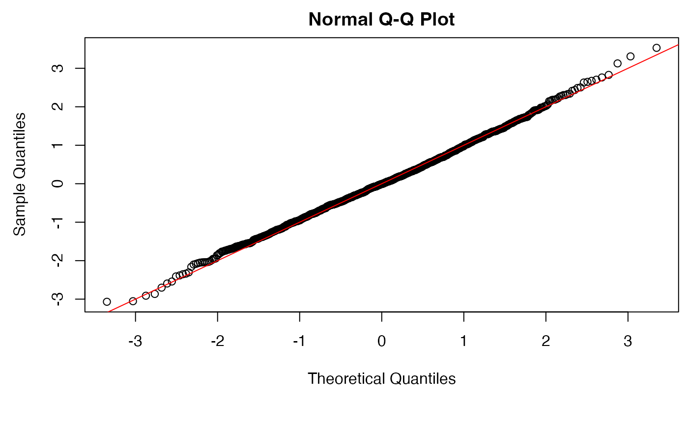

Fits a fourth corner model for abundance as a function of environmental variables and species traits.
traitglm.RdFits a fourth corner model - a model to study how variation in environmental response across taxa can be explained by their traits. The function to use for fitting can be (pretty well) any predictive model, default is a generalised linear model, another good option is to add a LASSO penalty via glm1path. Can handle overdispersed counts via family="negative.binomial", which is the default family argument.
Usage
<!-- %%%%%%%%% %%%%%%%%% %%%%%%%%% %%%%%%%%% %%%%%%%%% %%%%%%%%% %%%%%%%%% %%%%%%%%% %%%%%%%%% -->
traitglm(L, R, Q = NULL, family="negative.binomial", formula = NULL, method = "manyglm",
composition = FALSE, col.intercepts = TRUE, ...)Arguments
- L
A data frame (or matrix) containing the abundances for each taxon (columns) across all sites (rows).
- R
A data frame (or matrix) of environmental variables (columns) across all sites (rows).
- Q
A data frame (or matrix) of traits (columns) across all taxa (rows). If not specified, a different environmental response will be specified for each taxon.
- family
The family of the response variable, see
family. Negative binomial with unknown overdispersion and a log-link can be specified as "negative.binomial", and is the default.- formula
A one-sided formula specifying exactly how to model abundance as a function of environmental and trait variables (as found in
RandQrespectively). Default is to include all terms additively, with quadratics for quantitative terms, and all environment-by-trait interactions.- method
The function to use to fit the model. Default is
manyglm, some other available options areglm1path,cv.glm1pathfor LASSO-penalised fits, but in principle any model-fitting function that accepts formula input and a family argument should work.- composition
logical. TRUE includes a row effect in the model, adjusting for different sampling intensities across different samples. This can be understood as a compositional term in the sense that all other terms then model relative abundance at a site. FALSE (default) does not include a row effect, hence the model is of absolute abundance.
- col.intercepts
logical. TRUE (default) includes a column effect in the model, to adjust for different levels of abundance of different response (column) variables. FALSE removes this column effect.
- ...
Arguments passed to the function specified at
methodthat will be used to fit the model.
Details
This function fits a fourth corner model, that is, a model to predict abundance across several taxa (stored in L) as a function of environmental variables (R) and traits (Q). The environment-trait interaction can be understood as the fourth corner, giving the set of coefficients that describe how environmental response across taxa varies as traits vary. A species effect is include in the model (i.e. a different intercept term for each species), so that traits are used to explain patterns in relative abundance across taxa not patterns in absolute abundance.
The actual function used to fit the model is determined by the user through the method argument. The default is to use manyglm to fit a GLM, although for predictive modelling, it might be better to use a LASSO penalty as in glm1path and cv.glm1path. In glm1path, the penalty used for BIC calculation is log(dim(L)[1]), i.e. log(number of sites).
The model is fitted by vectorising L then constructing a big matrix from repeated values of R, Q, their quadratic terms (if required) and interactions. Hence this function will hit memory issues if any of these matrices are large, and can slow down (especially if using cv.glm1path). If formula is left unspecified, the design matrix is constructed using all environmental variables and traits specified in R and Q, and quadratic terms for any of these variables that are quantitative, and all environment-trait interactions, after standardising these variables. Specifying a one-sided formula as a function of the variables in R and Q would instead give the user control over the precise model that is fitted, and drops the internal standardisations. The arguments composition and col.intercepts optionally add terms to the model for row and column total abundance, irrespective of whether a formula has been specified.
Note: when specifying a formula, if there are no penalties on coefficients (as for manyglm), then main effects for R can be excluded if including row effects (via composition=TRUE), and main effects for Q can be excluded if including column effects (via col.intercepts=TRUE), because those terms are redundant (trying to explain main effects for row/column when these main effects are already in the model). If using penalised likelihood (as in glm1path and cv.glm1path) or a random effects model, by all means include main effects as well as row/column effects, and the penalties will sort out which terms to use.
If trait matrix Q is not specified, default behaviour will fit a different environmental response for each taxon (and the outcome will be very similar to manyglm(L~R)). This can be understood as a fourth corner model where species identities are used as the species traits (i.e. no attempt is made to explain differences across species).
These functions inherit default behaviour from their fitting functions. e.g. use plot for a Dunn-Smyth residual plot from a traits model fitted using manyglm or glm1path.
Value
Returns a traitglm object, a list that contains at least the following components:
- ...
Exactly what is included in output depends on the fitting function - by default, a
manyglmobject is returned, so all usualmanyglmoutput is included (coefficients, residuals, deviance, etc).- family
A
familyobject matching the final model.- fourth.corner
A matrix of fourth corner coefficients. If
formulahas been manually entered, this will be a vector not a matrix.- R.des
The reduced-size design matrix for environmental variables, including further arguments:
- X
Data frame of (possibly standardised) environmental variables
- X.squ
A data frame containing the leading term in a quadratic expression (where appropriate) for environmental variables
- var.type
A vector with the same dimension as the number of columns of X, listing the type of ecah enviromental variable (
"quantitative"" or"factor"")- coefs
Coefficients used in transforming variables to orthogonality. These are used later to make predictions.
- Q.des
The reduced-size design matrix for traits, set up as for
R.des.- spp.penalty
For LASSO fits: a vector of the same length as the final design matrix, indicating which variables had a penalty imposed on them in model fitting.
- L
The data frame of abundances specified as input.
- any.penalty
Logical, is any penalty applied to parameters at all (not if using a
manyglmfit).- scaling
A list of coefficients describing the standaridsations of variables used in analyses. Stored for use later if making predictions.
- call
The original call
traitglmcall.
References
Brown AM, Warton DI, Andrew NR, Binns M, Cassis G and Gibb H (2014) The fourth corner solution - using species traits to better understand how species traits interact with their environment, Methods in Ecology and Evolution 5, 344-352.
Warton DI, Shipley B & Hastie T (2015) CATS regression - a model-based approach to studying trait-based community assembly, Methods in Ecology and Evolution 6, 389-398.
Examples
data(antTraits)
ft=traitglm(antTraits$abund,antTraits$env,antTraits$traits,method="manyglm")
ft$fourth #print fourth corner terms
#> Bare.ground Canopy.cover Shrub.cover Volume.lying.CWD
#> Femur.length -0.005345114 -0.03372640 -0.08466868 0.166704473
#> No.spines -0.044762960 -0.05617178 -0.08895730 -0.119947323
#> Pilosity1 0.106170621 0.27895627 0.21017965 0.321139481
#> Pilosity2 0.156827335 0.21664390 0.24303431 0.273490092
#> Pilosity3 0.114907563 -0.06121788 0.14341268 0.198330954
#> Polymorphism1 0.104301092 0.05480562 0.03436300 -0.019276849
#> Polymorphism2 0.049544180 0.03579859 0.03286363 -0.009168761
#> Webers.length 0.088389978 0.08653766 -0.04842004 -0.014818163
#> Feral.mammal.dung
#> Femur.length -0.02590566
#> No.spines 0.03960764
#> Pilosity1 0.03909514
#> Pilosity2 0.04365594
#> Pilosity3 0.06744810
#> Polymorphism1 0.07903784
#> Polymorphism2 0.02906444
#> Webers.length -0.05484184
# for a pretty picture of fourth corner coefficients, uncomment the following lines:
# library(lattice)
# a = max( abs(ft$fourth.corner) )
# colort = colorRampPalette(c("blue","white","red"))
# plot.4th = levelplot(t(as.matrix(ft$fourth.corner)), xlab="Environmental Variables",
# ylab="Species traits", col.regions=colort(100), at=seq(-a, a, length=100),
# scales = list( x= list(rot = 45)))
# print(plot.4th)
plot(ft) # for a Dunn-smyth residual plot
#> Warning: Only the first 1 colors will be used for plotting.
qqnorm(residuals(ft)); abline(c(0,1),col="red") # for a normal quantile plot.

# predict to the first five sites
predict(ft,newR=antTraits$env[1:5,])
#> Amblyopone.australis Aphaenogaster.longiceps Camponotus.cinereus.amperei
#> 1 0.2915247 1.6758240 0.13962680
#> 2 0.2660360 1.2279629 0.10225500
#> 3 0.6399779 0.4133679 0.06996261
#> 4 0.7457054 1.1254080 0.15159501
#> 5 0.6290863 1.1886454 0.13795845
#> Camponotus.claripes Camponotus.consobrinus Camponotus.nigriceps
#> 1 1.5882815 6.533255 0.6465306
#> 2 0.9992304 3.822428 0.3617245
#> 3 0.5286793 2.085881 0.2068364
#> 4 1.5565875 6.994261 0.7491589
#> 5 1.2202803 4.786304 0.4660317
#> Camponotus.nigroaeneus Cardiocondyla.nuda.atalanta Crematogaster.sp..A
#> 1 0.4324601 0.4753732 0.6187287
#> 2 0.2952200 0.5125803 0.5969842
#> 3 0.3230668 0.2258040 0.2123576
#> 4 0.6981356 0.2937769 0.3467095
#> 5 0.5016820 0.5329964 0.5701489
#> Heteroponera.sp..A Iridomyrmex.bicknelli Iridomyrmex.dromus
#> 1 2.752978 4.265484 0.5410132
#> 2 2.736977 5.179754 0.3113038
#> 3 6.248325 2.472491 0.2169202
#> 4 3.560596 5.457475 0.3833169
#> 5 5.951588 5.885929 0.4180185
#> Iridomyrmex.mjobergi Iridomyrmex.purpureus Iridomyrmex.rufoniger
#> 1 4.783734 1.7115656 10.787564
#> 2 3.509257 1.6166375 14.377949
#> 3 3.372523 0.6516344 7.652899
#> 4 3.685605 2.3236480 14.071590
#> 5 5.297098 1.7583146 16.972377
#> Iridomyrmex.suchieri Iridomyrmex.suchieroides Melophorus.sp..E
#> 1 2.260163 0.6497343 0.3398724
#> 2 1.552272 0.9099106 0.2622988
#> 3 1.500275 0.5586519 0.1348947
#> 4 1.849393 0.9237102 0.2737148
#> 5 2.371717 1.1409125 0.3069213
#> Melophorus.sp..F Melophorus.sp..H Meranoplus.sp..A Monomorium.leae
#> 1 2.765283 0.6400440 1.166041 4.624572
#> 2 1.952843 1.4222025 2.220640 4.154987
#> 3 1.092640 0.2184712 0.262674 3.555537
#> 4 2.586227 1.0959581 1.095892 2.940917
#> 5 2.408389 0.9741255 1.326606 5.773649
#> Monomorium.rothsteini Monomorium.sydneyense Myrmecia.pilosula.complex
#> 1 4.038920 0.7488779 0.3649560
#> 2 3.202697 1.8842534 0.2176261
#> 3 2.114402 0.4047219 0.3307302
#> 4 2.261987 0.8872597 0.5034426
#> 5 4.008355 1.4173703 0.4202062
#> Notoncus.capitatus Notoncus.ectatommoides Nylanderia.sp..A Ochetellus.glaber
#> 1 0.5225036 2.823612 5.198331 0.4656999
#> 2 0.3876826 4.145781 3.608756 0.4092767
#> 3 0.3731349 0.576125 1.824137 0.3193943
#> 4 0.7014965 3.545182 2.563810 0.2778480
#> 5 0.6126697 2.768897 4.058062 0.5462199
#> Paraparatrechina.sp..B Pheidole.sp..A Pheidole.sp..B Pheidole.sp..E
#> 1 0.6742612 11.530209 0.5418926 5.960516
#> 2 0.5974297 11.990184 0.5360748 6.272317
#> 3 0.5957804 6.302869 0.2560292 2.864701
#> 4 0.4584397 9.015750 0.4055414 4.070264
#> 5 0.8931452 13.730600 0.5909188 6.709783
#> Pheidole.sp..J Polyrhachis.sp..A Rhytidoponera.metallica.sp..A
#> 1 0.2017042 0.33004718 11.029163
#> 2 0.1807849 0.42340247 6.937381
#> 3 0.0777551 0.07352097 4.311108
#> 4 0.1493097 0.32217248 7.103719
#> 5 0.1923654 0.30566147 8.723181
#> Rhytidoponera.sp..B Solenopsis.sp..A Stigmacros.sp..A Tapinoma.sp..A
#> 1 2.396689 0.1157554 0.9161827 2.507582
#> 2 2.494886 0.1283362 1.1465768 2.102907
#> 3 0.246794 0.1412504 0.7393362 1.907691
#> 4 2.974164 0.0772906 0.7023465 1.640594
#> 5 1.476929 0.1948736 1.3971389 3.030164
#> Tetramorium.sp..A
#> 1 1.8347039
#> 2 2.3379179
#> 3 0.6370468
#> 4 1.3149427
#> 5 1.9883810
# refit using LASSO and less variables, including row effects and only two interaction terms:
ft1=traitglm(antTraits$abund,antTraits$env[,3:4],antTraits$traits[,c(1,3)],
formula=~Shrub.cover:Femur.length+Shrub.cover:Pilosity,composition=TRUE,method="glm1path")
ft1$fourth #notice LASSO penalty has one interaction to zero
#> coef
#> Shrub.cover:Femur.length -0.11073713
#> Shrub.cover:Pilosity1 0.00000000
#> Shrub.cover:Pilosity2 0.04936684
#> Shrub.cover:Pilosity3 0.01561516